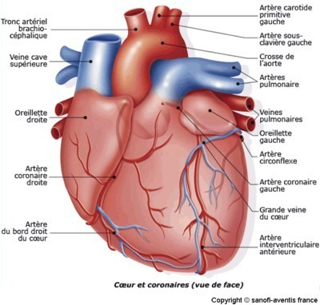
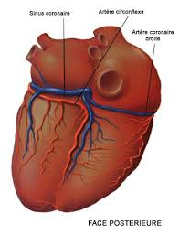

L'infarctus du myocarde
Definition L'infarctus du myocarde
L'infarctus du myocarde est une necrose
myocardique en rapport avec une hypoxie aigue majeure liee a une
obstruction d'une ou plusieurs arteres coronaires. Il s'agit d'une
urgence medicale.
|
|
Les arteres coronaires Les
arteres coronaires irriguent le cœur et se divisent e
partir de leur origine en plusieurs branches. Elles partent de
l’ostium coronaire a la sortie du ventricule
gauche (depart des vaisseaux coronaires) et les vaisseaux coronaires
partent des valvules sigmoedes.
Il est
plus grave d’avoir une atteinte sur la coronaire gauche que sur
la coronaire droite.
Le coeur
gauche est irrigue principalement par la coronaire gauche,
elle comprend un tronc commun qui se divise en deux parties :
- L’inter-ventriculaire anterieure (IVA).
- La circonflexe.
Le coeur
droit est principalement irrigue par la coronaire droite qui
se divise en deux :
- L’artere retro-ventriculaire.
- L’artere inter-ventriculaire posterieure
(IVP).


Signes
cliniques
- Douleur thoracique retrosternale
(mediane, anterieure), brutale, constrictive, irradiant dans le bras
gauche et la mechoire, prolongee (15 min environ).
- Sueur, angoisse, agitation.
- Hypertension.
- Tachycardie.
- Hyperthermie : lors de necrose, les
cellules liberent des substance pyrogenes.
Examens
complementaires
- Monitoring permanent.
- 2 electrocardiogrammes (ECG) par jour et
faire un ECG e
chaque douleur.
- Bilan sanguin : enzyme cardiaque (CPK,
troponine),
ionogramme, NFS, hemostase, rhesus.
- Echocardiographie.
Complications
Traitements
- Limiter l'extension de la necrose :
traitement thrombolytique dans les 6 premieres heures : streptase,
actilyse.
- Trinitrine
: vasodilatateur.
- Lutter contre la thrombose :
anticoagulant (heparine).
- Lutter contre la douleur : antalgique.
- Lutter contre l'hypoxie :
oxygenotherapie, surveillance des gaz du sang et de la saturation.
- Mettre au repos le muscle cardiaque :
β-bloquant, repos strict au lit.
- Favoriser la digestion et l'elimination
: repas leger, laxatif sur prescription medicale.
Soins
infirmiers
- Installer le patient en position demi
assise ou assise.
- Prendre la tension arterielle et la
frequence cardiaque.
- Mettre le patient sous monitoring et
effectuer une electrocardiographie (ECG).
- Oxygenotherapie aux lunettes nasales a 3
l/min.
- Pose d'une voie d'abord de gros calibre,
si possible au deux membres en cas de grosse reanimation : solute
glucose.
- Prelevement sanguin par ponction
veineuse : enzyme cardiaque (CPK, troponine), ionogramme, hemogramme,
hemostase.
- Veiller et expliquer le pourquoi du
repos strict au lit.
- Recuperer les urines.
- Actions pour la prevention du decubitus
: massage des points d'appui, changes.
- Surveiller le risque hemorragique :
epistaxis (saignement de nez), hematurie.
Reprise
de l'activite physique
- Reeducation et readaptation : premier
leve apres 4 jours, mise au fauteuil, reprise exercices palliatif.
Voir aussi :